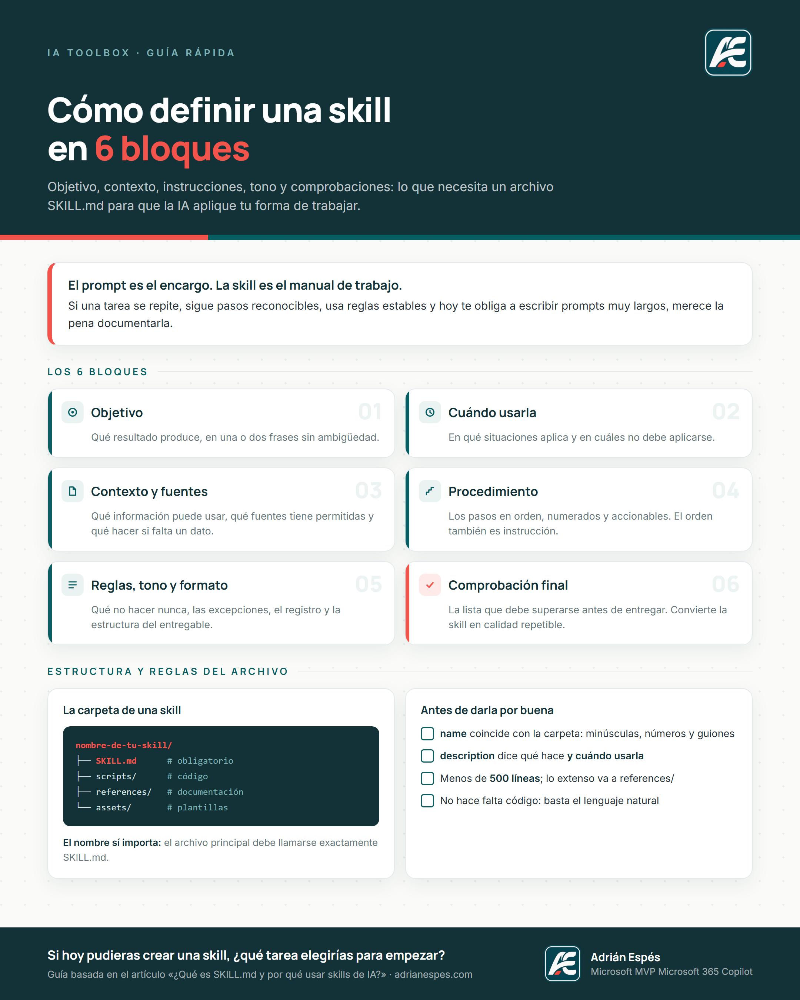

Objetivo
Qué resultado produce la skill, en una o dos frases sin ambigüedad.
Una guía sencilla para definir el objetivo, el contexto, las instrucciones, el tono y las comprobaciones de una skill de forma estructurada.
Cuando repetimos una tarea, volvemos a explicar el contexto, las reglas, los pasos, las fuentes permitidas y las comprobaciones. Una skill permite documentar esa forma de trabajar para que la IA pueda aplicarla cuando resulte necesario.
Esta plantilla recoge esa estructura en seis bloques, para que no tengas que empezar desde una hoja en blanco.
Qué resultado produce la skill, en una o dos frases sin ambigüedad.
En qué situaciones aplica y en cuáles no debe aplicarse.
Qué información puede usar, qué fuentes tiene permitidas y qué hacer si falta un dato.
Los pasos en orden, numerados y accionables. El orden también es instrucción.
Qué no hacer nunca, las excepciones, el registro y la estructura del entregable.
La lista que debe superarse antes de entregar. Convierte la skill en calidad repetible.
SKILL.md.SKILL.md y el campo name debe coincidir con el nombre de la carpeta: minúsculas, números y guiones, sin guiones al inicio o final ni consecutivos.nombre-de-tu-skill/ ├── SKILL.md # obligatorio ├── scripts/ # código ejecutable ├── references/ # documentación consultable └── assets/ # plantillas y recursos
description dice qué hace y cuándo usarlareferences/Archivo Markdown con los seis bloques, comentarios de ayuda y el test previo.
Descargar .mdUna página en A4 con los seis bloques, la estructura de carpetas y la comprobación final.
Descargar PDFLos seis bloques en una imagen, pensada para compartir o usar como recordatorio.
Descargar PNG
{kind=link}